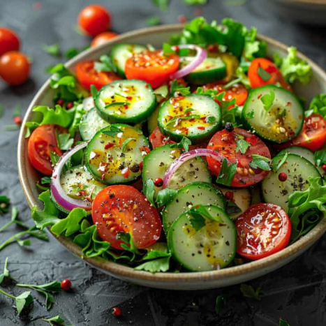

Fresh Garden Salad
A colorful and refreshing salad made with crisp lettuce,
cucumber, juicy tomatoes, onions, and fresh herbs tossed
in a light and flavorful dressing.
Ingredients
- 1 cup lettuce leaves, chopped
- 1 cucumber, thinly sliced
- 2 tomatoes, sliced
- 1 small red onion, thinly sliced
- 2 tbsp fresh parsley or coriander, chopped
- 1 tbsp olive oil
- 1 tbsp lemon juice
- ½ tsp black pepper
- ½ tsp chili flakes
- Salt to taste
Instructions
- Wash all vegetables thoroughly.
- Chop the lettuce and place it in a large bowl.
- Add cucumber slices, tomato slices, and onion rings.
- Sprinkle fresh herbs over the vegetables.
- In a small bowl, mix olive oil, lemon juice, salt, pepper, and chili flakes.
- Pour the dressing over the salad.
- Toss gently until everything is evenly coated.
- Serve immediately for maximum freshness.
Preparation Time
Preparation: 15 minutes
Cooking: 0 minutes
Total Time: 15 minutes
Health Benefits
Rich in vitamins, minerals, fiber, and antioxidants,
this salad is a healthy and nutritious choice for any meal.
← Back to Home